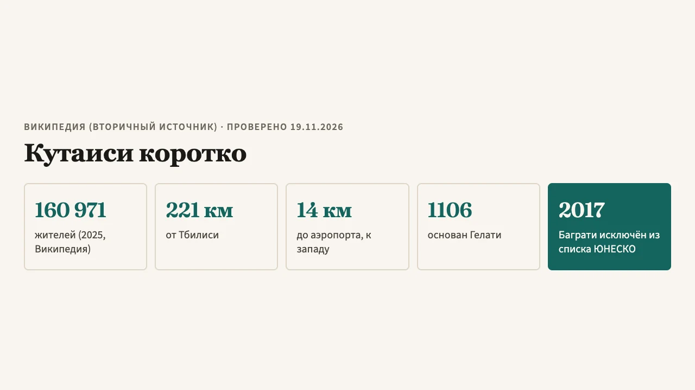

- Жителей
- 160 971 (2025)
- От Тбилиси
- 221 км
- Аэропорт
- 14 км к западу
- Жарче всего
- август, 30,2 °C
- Скорая
- 112
Статья входит в путеводитель по Грузии. Русская Википедия (вторичный источник) описывает город так: «Важнейший исторический и экономический центр Западной Грузии, административный центр края Имеретия». Население — 160 971 человек на 2025 год, по данным английской Википедии. В русской статье указана другая цифра за другой год, поэтому даём цифру английской статьи.
Что посмотреть в Кутаиси
Начните с трёх старых храмов и монастырей. Главные достопримечательности Кутаиси — собор Баграти в городе, Гелатский монастырь и монастырский комплекс Моцаметы в 6 км от центра. Между ними стоит пройтись вдоль реки.
Город. Русская Википедия называет Кутаиси «одним из древнейших городов Грузии». Он стоит «по обоим берегам реки Риони». Среди фотографий города в английской Википедии — Белый мост и Колхидский фонтан.
Маршрут на день. Наш совет: утром — собор Баграти, днём — Гелати, к вечеру — монастырь Моцаметы или прогулка вдоль Риони. Так за один день вы увидите все три церкви.

Храм Баграти
Его построили как главный собор объединённого Грузинского царства. Сейчас у него нет статуса ЮНЕСКО — его сняли в 2017 году.
Что это за храм. Русская Википедия называет его так: «храм, возведённый в Кутаиси в правление Баграта III как главный собор объединённого Грузинского царства».
История. В карточке той же статьи: «1003 год — Освящён». Годом упразднения храма там указан 1692-й. Английская Википедия уточняет: в 1692 году собор разрушило пушечное ядро османских войск, вторгшихся в Имеретинское царство.
История с ЮНЕСКО. «В 1994 году храм Баграта был внесён ЮНЕСКО в число объектов Всемирного наследия», — пишет русская Википедия. Потом собор восстановили. Итог там же: «В 2017 году ЮНЕСКО удалила собор Баграти из списка объектов Всемирного наследия, так как его реконструкция нанесла ущерб целостности и подлинности.»
Устаревшие ответы. Некоторые ИИ-сводки в поиске до сих пор называют собор объектом наследия ЮНЕСКО. До 2017 года так и было, но теперь это неверно.
Наш совет. В июле и августе днём в среднем больше 29 °C. Приходите к собору утром или ближе к вечеру, а питьё берите с собой.
Монастырь Гелати
В отличие от Баграти, он остался в списке Всемирного наследия ЮНЕСКО. Его основал царь Давид IV Строитель.
Основатель. Русская Википедия пишет: «Монастырь был основан царём Давидом IV Строителем в 1106 году и стал его усыпальницей».
Статус сегодня. В карточке статьи о Гелатском монастыре: «Всемирное наследие ЮНЕСКО, объект № 710». А в статье о храме Баграта сказано, что решение 2017 года «сохраняет статус всемирного наследия у монастыря Гелати».

Наш совет. Договоритесь с водителем об обратной дороге до выезда.
Моцамета
Это монастырский комплекс на скале над изгибом реки. Английская Википедия помещает его примерно в 6 км к северо-востоку от центра Кутаиси.
Где стоит. По той же статье, на скалистом мысу в излучине реки Цкалцитела, притока Риони.
Наш совет. Монастырь Моцаметы стоит над обрывом. Наденьте обувь, которая не скользит, и держите детей рядом.
Рядом. Пещера Прометея — около 34 км от города, по данным национальных парков Грузии. О ней рассказываем в путеводителе по каньону Мартвили (на английском). Там же — сам каньон Мартвили, в 45 км, по тем же данным. Курорт Цхалтубо — в 9 км, по данным Википедии; о нём — путеводитель по Цхалтубо (на английском).
Аэропорт Кутаиси
Самолёты садятся в 14 км к западу от города. Код на билете — KUT.
Главное. Английская Википедия пишет, что у него есть и второе название — в честь Давида Строителя. Им управляет компания United Airports of Georgia. Для Wizz Air, по той же статье, это одна из баз. Рейсы и их расписание уточняйте у своей авиакомпании.
Как доехать до города. Шаттлы и автобусы смотрите на официальном сайте kutaisi.aero перед вылетом. Цены и время в пути мы не приводим: проверить их не смогли.
Полис. Для въезда в Грузию нужен полис на всё пребывание с покрытием не меньше 30 000 лари — подробнее о правиле. GOV.UK в разделе о въезде предупреждает: подтверждение может попросить авиакомпания на регистрации или пограничники, когда вы прилетите в Грузию.
Наш совет. Распечатайте полис и держите его в ручной клади. Сохраните 112 в телефоне до вылета.

Погода в Кутаиси по месяцам
Лето жаркое, а дожди идут в каждом месяце. Больше всего осадков — в октябре, декабре и январе.
В таблице — нормы 1991–2020 годов по данным NOAA, как их приводит английская Википедия. Это средние за 30 лет, а не прогноз на завтра. Дождливым считается день, когда выпало не меньше 1 мм.
| Месяц | Средний максимум днём, °C | Осадки, мм | Дней с осадками |
|---|---|---|---|
| Январь | 9,7 | 138 | 12,5 |
| Февраль | 10,9 | 117 | 11,1 |
| Март | 14,7 | 134 | 12,5 |
| Апрель | 19,9 | 86 | 9,9 |
| Май | 24,5 | 85 | 9,2 |
| Июнь | 27,6 | 101 | 8,9 |
| Июль | 29,4 | 86 | 8,8 |
| Август | 30,2 | 78 | 7,4 |
| Сентябрь | 27,0 | 117 | 8,3 |
| Октябрь | 22,3 | 145 | 9,5 |
| Ноябрь | 16,0 | 129 | 10,4 |
| Декабрь | 11,6 | 143 | 11,4 |
Осадки в таблице округлены до целого миллиметра.
Жарче всего — в июле и августе: 29,4 и 30,2 °C днём в среднем. Рекорд в той же таблице (экстремумы 1981–2020 годов) — 43,1 °C, в июле.
Холоднее всего — в январе: в среднем 9,7 °C днём.
Дожди. Больше всего осадков в октябре — 145 мм. Почти столько же в декабре (143 мм) и январе (138 мм). Суше всего в августе — 78 мм. За год выпадает около 1 358 мм.
Дождливые дни. Чаще всего дождь идёт в январе и марте — по 12,5 дня в месяц. Реже всего в августе — 7,4 дня.

Наш вывод. Май и июнь тёплые, а дождей в них меньше, чем осенью и зимой. Август — самый жаркий и самый сухой месяц.
Наш совет. В любой месяц берите куртку от дождя. Летом гуляйте утром и вечером, а днём уходите в тень. Едете потом к морю — вот наш путеводитель по Батуми.
Вода из-под крана и пищевое отравление
Официальные советы короткие: мойте руки, а при расстройстве желудка пейте и отдыхайте. Вердикта о водопроводе мы не даём — только то, что пишут источники.
Из-под крана. GOV.UK — сайт правительства Великобритании — среди рисков для здоровья в Грузии называет разное качество воды. И добавляет: бутилированная вода продаётся везде.
Если видите другой ответ. Некоторые ИИ-сводки в поиске пишут, что в больших городах воду из-под крана «формально» считают пригодной. Источника такие сводки не приводят, поэтому мы опираемся на GOV.UK.
Еда и руки. Правительство Канады советует быть осторожнее с едой и питьём и чаще мыть руки. Оно же предупреждает: диарея путешественников — самая частая болезнь в поездках.
Признаки отравления. NHS перечисляет: тошнота или рвота, диарея, боль в животе, высокая температура.
Что делать дома. Главное, по словам NHS, — много пить, чтобы не было обезвоживания. Если тошнит, пейте маленькими глотками. И больше отдыхайте.
Когда идти к врачу. NHS называет такие признаки:
- диарея дольше 7 дней или рвота дольше 2 дней;
- диарея с кровью;
- рвота не прекращается, и жидкость не удерживается;
- признаки обезвоживания не проходят даже после регидратационных растворов;
- болеет ребёнок до года или у ребёнка до 5 лет признаки обезвоживания (например, меньше мокрых подгузников).
В Великобритании тут звонят 111, в Грузии — идите к врачу.
Когда звонить 112. NHS советует вызывать скорую (у них это 999, в Грузии — 112), если, в том числе:
- рвота кровью или массой, похожей на кофейную гущу;
- внезапная сильная головная боль или боль в животе;
- шея не гнётся и больно смотреть на яркий свет;
- очень трудно дышать;
- человек путается или ведёт себя не как обычно;
- губы, язык или кожа синие, серые или бледные;
- зелёная рвота или человек мог проглотить что-то ядовитое.
Наш совет. Жара усиливает обезвоживание. Летом в поездку к монастырям берите полную бутылку и доливайте её по пути.

Как добраться из Тбилиси в Кутаиси
Расстояние — 221 км. Поезда проверяйте в официальном расписании перед поездкой.
Расстояние. По данным английской Википедии, город лежит в 221 км к западу от Тбилиси.
Поезд. Смотрите общее расписание Грузинской железной дороги на railway.ge. Не полагайтесь на старые путеводители и форумы: расписание меняется.
В Батуми. В том же расписании на 19 ноября 2026 года есть две ежедневные электрички Кутаиси — Батуми: № 682/681 и № 684/683.
Маршрутки. Правительство Канады советует не ездить на маршрутках: по его словам, они плохо обслуживаются и часто без ремней безопасности (подробнее о маршрутках, на английском).
Время и цены. Мы их не приводим: они меняются, а проверять их надёжнее на сайте железной дороги.
Наш совет. Долгие переезды планируйте на светлое время дня. Летом берите питьё и перекус на весь путь.
Больница и врач в Кутаиси
Если срочно — звоните 112. Если можно подождать, в городе много клиник, есть и больницы.
Экстренно. GOV.UK советует набрать 112 и попросить скорую. Как позвонить и что сказать диспетчеру — в нашем материале о номере 112 (на английском).
Где найти врача. В каталоге врачей и клиник Кутаиси на 100doc.ge на 19 ноября 2026 года — 139 клиник, 13 врачей и 802 отзыва. Среди направлений клиник: стоматология — 32, больница — 25, медицинский центр — 15.
Перед лечением. GOV.UK советует сразу сообщить страховщику, если вас направили в клинику.
Укус собаки. По словам GOV.UK, если вас укусила или поцарапала собака, сразу обратитесь к врачу. Почему это важно, объясняем на странице о бешенстве в Грузии.
Наш совет.
- Возьмите свои лекарства на всю поездку, в заводских упаковках.
- Запишите на английском список лекарств и диагнозов.
- Сохраните в телефоне 112 и номер хозяина жилья.
Едете дальше, на курорт с минеральной водой? Вот наш путеводитель по Боржоми.
Частые вопросы
Можно ли пить воду из-под крана в Кутаиси?
Своего вердикта мы не даём. GOV.UK пишет: качество разное, бутилированная вода продаётся везде.
Сколько километров от аэропорта до города?
14 км к западу от центра, по данным английской Википедии. Шаттлы и автобусы смотрите на kutaisi.aero.
Баграти — объект ЮНЕСКО?
Уже нет. Храм внесли в список в 1994 году, а в 2017 году ЮНЕСКО исключила его из-за реконструкции, пишет русская Википедия. Гелати в списке остался.
Кто основал Гелати?
Царь Давид IV Строитель, в 1106 году. По данным русской Википедии, монастырь стал его усыпальницей. Сегодня он в списке Всемирного наследия ЮНЕСКО под № 710.
Что делать при пищевом отравлении?
Много пить маленькими глотками и отдыхать, советует NHS. К врачу — если диарея дольше 7 дней, рвота дольше 2 дней, диарея с кровью или жидкость не удерживается. Рвота кровью, внезапная сильная боль, трудно дышать, спутанность — звоните 112.
Где найти больницу в Кутаиси?
В каталоге 100doc.ge на 19 ноября 2026 года — 139 клиник, у 25 из них направление «больница». Если срочно — звоните 112 и просите скорую.
Как доехать из Тбилиси?
Расстояние — 221 км, по данным английской Википедии. Поезда проверяйте в расписании на railway.ge.
Источники
- Русская Википедия: Кутаиси (вторичный источник)
- Русская Википедия: Храм Баграта (вторичный источник)
- Русская Википедия: Гелатский монастырь (вторичный источник)
- Английская Википедия: город, население и климатические нормы 1991–2020 (вторичный источник) (на английском)
- Английская Википедия: собор Баграти (вторичный источник) (на английском)
- Английская Википедия: монастырь Моцаметы (вторичный источник) (на английском)
- Английская Википедия: аэропорт KUT (вторичный источник) (на английском)
- kutaisi.aero — официальный сайт: шаттлы и автобусы
- GOV.UK: здоровье в Грузии (на английском)
- GOV.UK: правила въезда в Грузию (на английском)
- Правительство Канады: рекомендации для путешественников, Грузия (на английском)
- NHS: пищевое отравление (на английском)
- Грузинская железная дорога: общее расписание (на английском)
- Английская Википедия: Цхалтубо — 9 км от Кутаиси (вторичный источник)
- Национальные парки Грузии: каньон Мартвили — 45 км от Кутаиси
- Национальные парки Грузии: как добраться до пещеры Прометея (на английском)
Это справочная информация, а не медицинская консультация: лечение назначает врач. Проверено 19 ноября 2026 года.